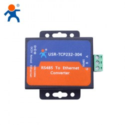
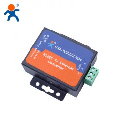
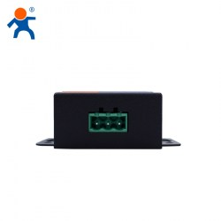
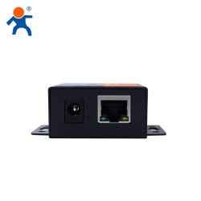

☆USR-TCP232-304☆



Преобразователи COM-портов в Ethernet
Преобразователь USR-TCP232-304
2820 рублей с НДС
в корзину
Законченное устройство преобразователя RS485 Ethernet, используемое для прозрачной передачи данных. Преобразователь USR-TCP232-304 Ethernet в Serial представляет собой оборудование для преобразования пакетов данных TCP или UDP в данные для интерфейса RS232. Преобразователь является встраиваемым конвертором последовательного в Ethernet, который имеет интегрированный набор протоколов TCP/IP.